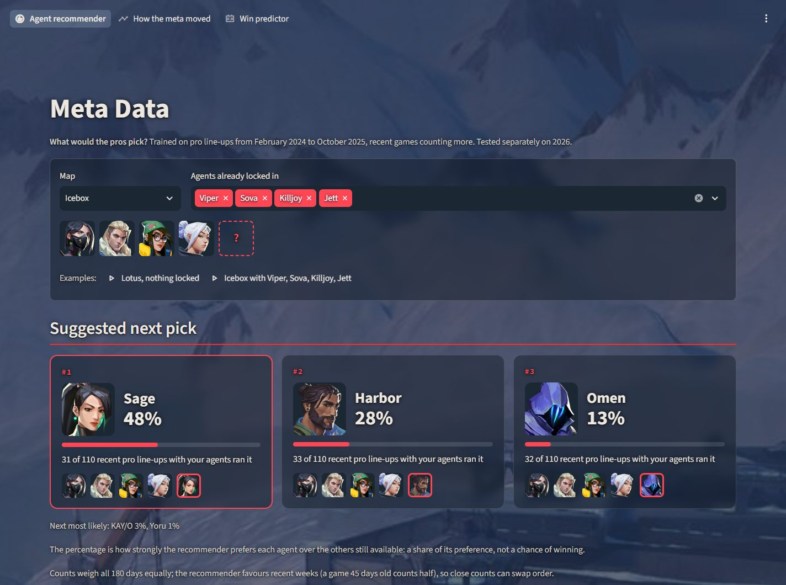

4 imagesMeta Data: Valorant pro pick recommender
Given a map and the agents a team has locked in, the app suggests the pick a professional team would make next. A second model tests whether agent picks predict who wins a map.
- The pros' actual fifth pick is in its top three 91.3% of the time on unseen 2025 games and 87.4% on the 2026 season, against 77.3% and 72.1% for a most-played baseline.
- Cleaned and joined three public datasets and scraped match dates from vlr.gg, covering 3,262 professional maps.
- Tested by date, with each test written down before it ran. Found no evidence that agent picks predict the winner.
Python, pandas, scikit-learn, SHAP, Streamlit, BeautifulSoup